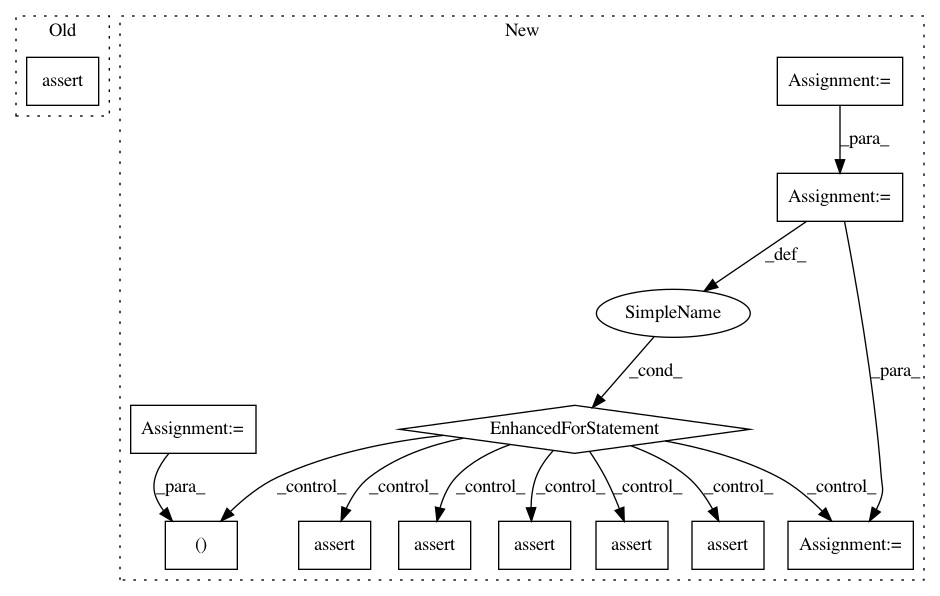

489b7e1a412b4053bc9ebd77e8cbc177e9495d2f,tests/test_correlation.py,,test_correlation,#,22
Before Change
ny NUMERICAL
)
""")
assert bdb.execute("ESTIMATE CORRELATION, CORRELATION PVALUE"
" FROM PAIRWISE COLUMNS OF t_cc"
" WHERE name0 < name1").fetchall() == \
[
(2, "c0", "c1", 1., 2.900863120340436e-12),
(2, "c0", "cx", None, None),
(2, "c0", "cy", None, None),
(2, "c0", "n0", 1., 0.),
(2, "c0", "n1", 1., 0.),
(2, "c0", "nc", 1., 0.),
(2, "c0", "nl", 1., 0.),
(2, "c0", "nx", None, None),
(2, "c0", "ny", None, None),
(2, "c1", "cx", None, None),
(2, "c1", "cy", None, None),
(2, "c1", "n0", 1., 0.),
(2, "c1", "n1", 1., 0.),
(2, "c1", "nc", 1., 0.),
(2, "c1", "nl", 1., 0.),
(2, "c1", "nx", None, None),
(2, "c1", "ny", None, None),
(2, "cx", "cy", None, None),
(2, "cx", "n0", None, None),
(2, "cx", "n1", None, None),
(2, "cx", "nc", None, None),
(2, "cx", "nl", None, None),
(2, "cx", "nx", None, None),
(2, "cx", "ny", None, None),
(2, "cy", "n0", None, None),
(2, "cy", "n1", None, None),
(2, "cy", "nc", None, None),
(2, "cy", "nl", None, None),
(2, "cy", "nx", None, None),
(2, "cy", "ny", None, None),
(2, "n0", "n1", 0.7913965673596881, 0.),
(2, "n0", "nc", 0.20860343264031175, .26502),
(2, "n0", "nl", 0.7913965673596881, 0.),
(2, "n0", "nx", None, None),
(2, "n0", "ny", None, None),
(2, "n1", "nc", 0., 1.),
(2, "n1", "nl", 1., 0.),
(2, "n1", "nx", None, None),
(2, "n1", "ny", None, None),
(2, "nc", "nl", 0., 1.),
(2, "nc", "nx", None, None),
(2, "nc", "ny", None, None),
(2, "nl", "nx", None, None),
(2, "nl", "ny", None, None),
(2, "nx", "ny", None, None),
]
After Change
(2, "nl", "ny", None, None),
(2, "nx", "ny", None, None),
]
for expected_item, observed_item in zip(expected, result):
(xpd_genid, xpd_name0, xpd_name1, xpd_corr, xpd_corr_p) = expected_item
(obs_genid, obs_name0, obs_name1, obs_corr, obs_corr_p) = observed_item
assert xpd_genid == obs_genid
assert xpd_name0 == obs_name0
assert xpd_name1 == obs_name1
assert xpd_corr == obs_corr or abs(xpd_corr - obs_corr) < 1e-10
assert xpd_corr_p == obs_corr_p or abs(xpd_corr_p - obs_corr_p) < 1e-10
In pattern: SUPERPATTERN
Frequency: 3
Non-data size: 12
Instances
Project Name: probcomp/bayeslite
Commit Name: 489b7e1a412b4053bc9ebd77e8cbc177e9495d2f
Time: 2015-10-28
Author: gremio@acm.org
File Name: tests/test_correlation.py
Class Name:
Method Name: test_correlation
Project Name: scipy/scipy
Commit Name: 289ae46ae4b3e1abbf135e204c62908aeadc7d85
Time: 2020-07-07
Author: peterbell10@live.co.uk
File Name: scipy/spatial/tests/test_kdtree.py
Class Name: Test_vectorization
Method Name: test_vectorized_query_all_neighbors
Project Name: mlflow/mlflow
Commit Name: 7523a25afc269ea9fa18bfe93e8876a436e478bc
Time: 2020-03-20
Author: asgeir.berland@gmail.com
File Name: tests/store/artifact/test_azure_blob_artifact_repo.py
Class Name:
Method Name: test_log_artifacts